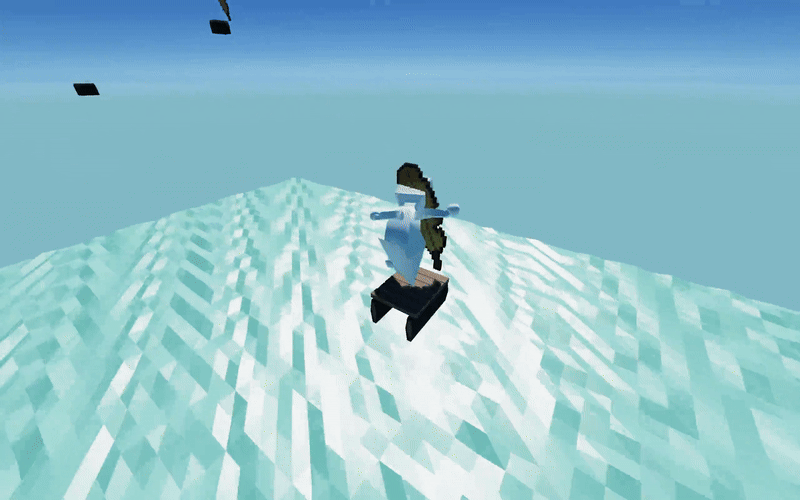
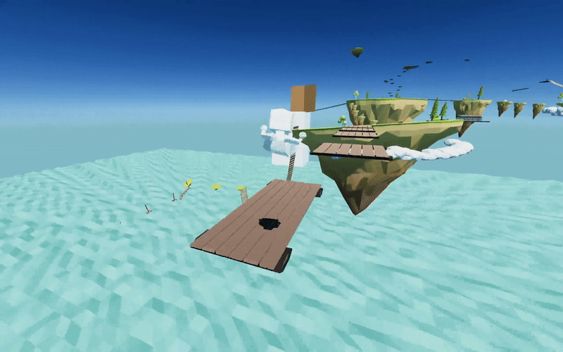
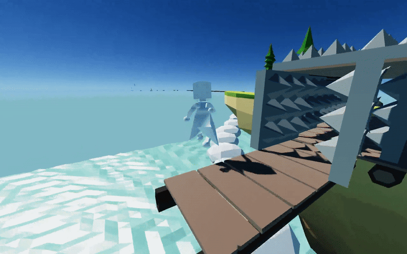

Icarus: Crispy Feathers
Tools Used:
- Unity
- C#
- Maya
- Aseprite
- Role: Gameplay Programmer/Designer
- Team Size: 3
- Development Time: 7 Months (Started in 2023, Resumed in 2025)
Icarus: Crispy Feathers is a demo for a 3D Platformer collectathon where you must collect Icarus' feathers that have been scattered across the world after he flew too close to the sun. This was our first ever group project in Game Programming, and as rough as it was, we really learned a lot about the game Development process and how to work in an engine. I worked on the main gameplay mechanics, which includes player movement, collecting the coins and feathers and linking them together to add progression to the game.
Collection and Movement
This demo contains the first level with coins and feathers to collect before you can unlock a gate. The more feathers you collect, you reach milestones that will upgrade the player's movement.

The first major milestone is the Double Jump. While the jump height is rather short, it can still be used to reset momentum and aim your jumps more precisely.

The second major milestone is the Air Dash, which gives the player huge horizontal momentum, great for crossing large gaps.

Try to see if you can collect all of the feathers!The game can be downloaded here!